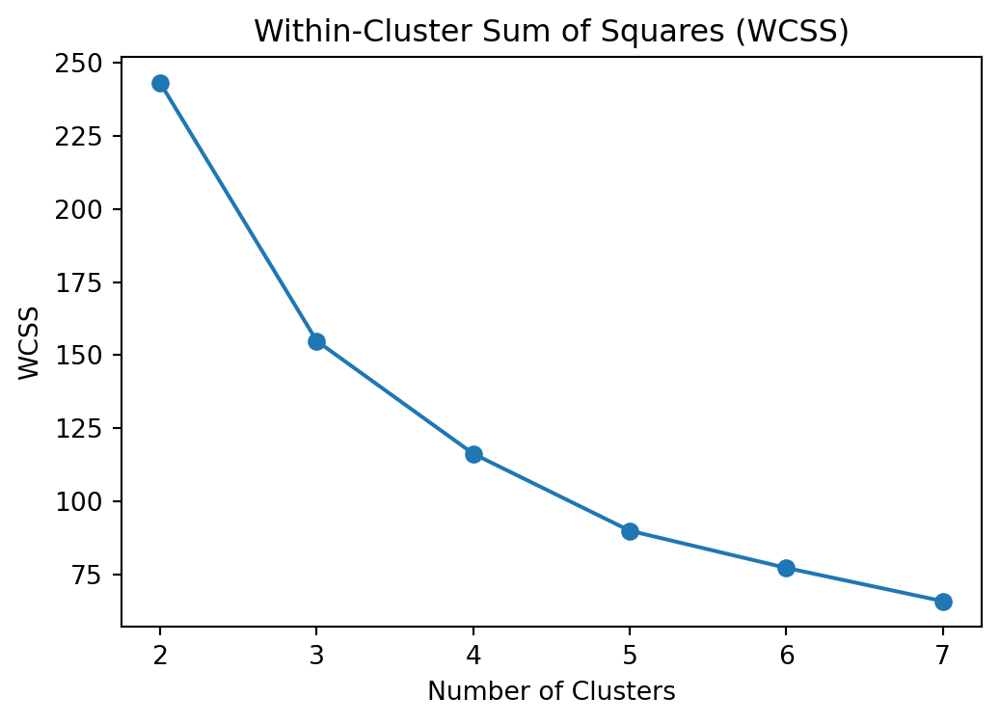
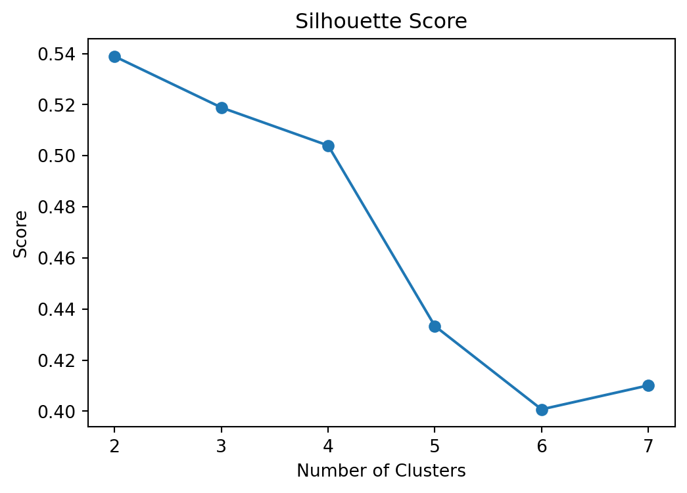
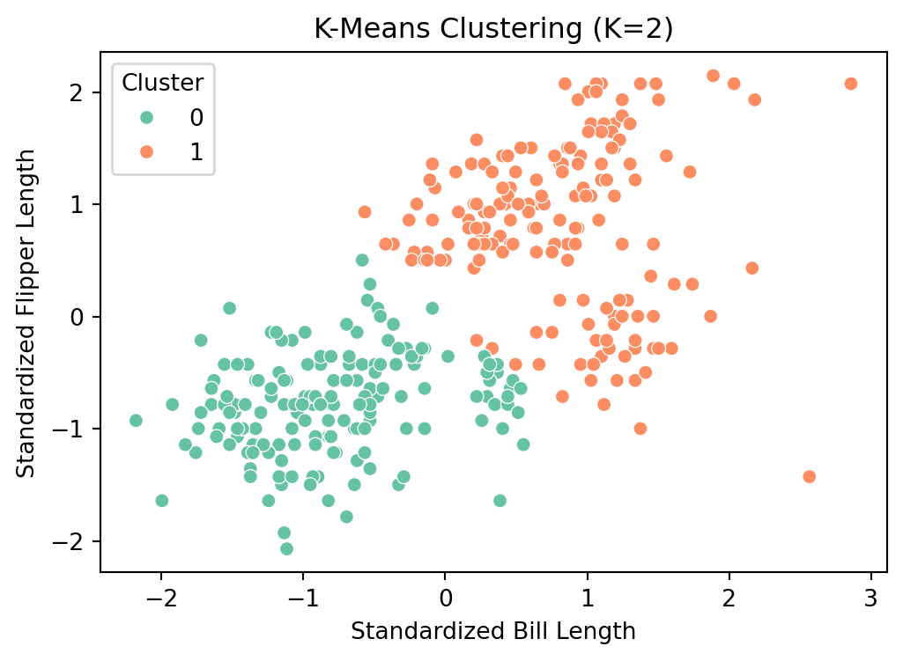

Zewei Chen
June 9, 2025
In this blog post, I present two machine learning analyses: - An unsupervised learning task using the K-Means algorithm on the Palmer Penguins dataset, and - A supervised learning task conducting Key Drivers Analysis using various model-based importance metrics.
Each section provides visualizations, explanations, and insights based on the results.
We used the Palmer Penguins dataset to explore unsupervised learning via K-Means clustering. The features used were bill_length_mm and flipper_length_mm. After standardizing the data, we tested various cluster counts (K = 2 through 7) and selected the best one using both Within-Cluster-Sum-of-Squares (WCSS) and Silhouette Score.


The plots suggest that K=2 is optimal based on the Silhouette Score.

We see two well-separated clusters in the standardized feature space, indicating strong natural grouping among the penguins.
Using the data_for_drivers_analysis.csv dataset, we analyzed which factors most influence customer satisfaction. Below are the techniques applied:
Pearson correlation Standardized regression coefficients Usefulness (ΔR² when dropping a variable) Johnson’s epsilon weights (Shapley approx.) Random Forest Gini importance Permutation importance as a SHAP alternative
| Pearson | Standardized Coefs | Usefulness (ΔR²) | Johnson’s Epsilon | RF Gini | Permutation | |
|---|---|---|---|---|---|---|
| trust | 25.6 | 11.6 | -740.5 | 10.9 | 15.6 | 17.0 |
| impact | 25.5 | 12.8 | -740.2 | 1.9 | 14.1 | 15.3 |
| service | 25.1 | 8.8 | -740.9 | 28.2 | 13.0 | 15.1 |
| build | 19.2 | 2.0 | -741.3 | 8.2 | 10.2 | 12.2 |
| rewarding | 19.5 | 0.5 | -741.3 | 2.4 | 10.1 | 12.0 |
| easy | 21.3 | 2.2 | -741.3 | 25.3 | 10.0 | 11.9 |
| popular | 17.1 | 1.7 | -741.3 | 10.7 | 9.5 | 11.7 |
| differs | 18.5 | 2.8 | -741.3 | 0.5 | 9.0 | 10.8 |
| appealing | 20.8 | 3.4 | -741.3 | 11.7 | 8.6 | 11.6 |
To deepen the analysis, we applied two nonlinear modeling approaches: a neural network (MLP) and XGBoost. These models can capture complex, non-additive relationships and provide an alternative view of variable importance.
We trained a multi-layer perceptron (MLP) model and computed permutation-based feature importance, which measures how much model performance declines when each feature is randomly shuffled.
We also trained an XGBoost model and extracted its built-in feature importance scores based on information gain.
| Pearson | Standardized Coefs | Usefulness (ΔR²) | Johnson’s Epsilon | RF Gini | Permutation | NeuralNet | XGBoost | |
|---|---|---|---|---|---|---|---|---|
| trust | 25.6 | 11.6 | -740.5 | 10.9 | 15.6 | 17.0 | 10.9 | 29.0 |
| impact | 25.5 | 12.8 | -740.2 | 1.9 | 14.1 | 15.3 | 9.7 | 18.5 |
| service | 25.1 | 8.8 | -740.9 | 28.2 | 13.0 | 15.1 | 9.9 | 11.1 |
| build | 19.2 | 2.0 | -741.3 | 8.2 | 10.2 | 12.2 | 6.7 | 7.9 |
| popular | 17.1 | 1.7 | -741.3 | 10.7 | 9.5 | 11.7 | 6.2 | 7.6 |
| easy | 21.3 | 2.2 | -741.3 | 25.3 | 10.0 | 11.9 | 6.7 | 7.1 |
| appealing | 20.8 | 3.4 | -741.3 | 11.7 | 8.6 | 11.6 | 8.9 | 6.6 |
| rewarding | 19.5 | 0.5 | -741.3 | 2.4 | 10.1 | 12.0 | 7.2 | 6.5 |
| differs | 18.5 | 2.8 | -741.3 | 0.5 | 9.0 | 10.8 | 7.0 | 5.6 |
These results highlight which features are consistently important across methods. Notably, variables such as trust, impact, and service remain influential even in complex models like neural networks and boosted trees. This consistency strengthens our confidence in these variables as key drivers of satisfaction.
By combining linear, tree-based, and nonlinear models, we achieve a more comprehensive and reliable view of what matters most to customers.
K-Means clustering revealed clear groupings in the penguins dataset, highlighting the power of unsupervised learning.
Key Drivers analysis demonstrated the value of ensemble models and statistical regressions to interpret feature importance from multiple perspectives.
Both sections highlight the practical use of machine learning to derive insights from structured data.